1단계
그냥 맡기기
끝에 붙인 말아무 말도 붙이지 않았어요.


색만 다르고 순서가 같아요. 큰 제목, 설명 한두 줄, 단추, 그 아래 그림이나 카드.
Homepage
같은 부탁을 일곱 번씩, 네 가지로 해 본 실제 화면이에요. 어디서 몰렸고 언제 풀렸는지 보고, 우리 가게 요청문까지 만들어 가세요.
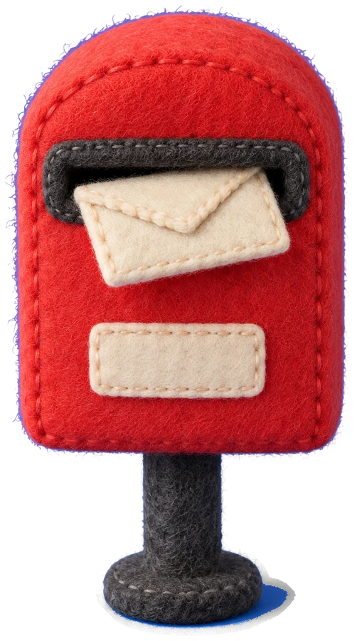
빵집 · 필라테스 · 세무사 두 번씩과 꽃집까지, 같은 일곱 판에 부탁만 바꿨어요. 노란 테가 둘러진 화면이 한쪽으로 몰린 판이에요. 화면을 누르면 크게 볼 수 있어요.
1단계
끝에 붙인 말아무 말도 붙이지 않았어요.
색만 다르고 순서가 같아요. 큰 제목, 설명 한두 줄, 단추, 그 아래 그림이나 카드.
2단계
끝에 붙인 말「먼저 이 가게에 어울리는 실제 물건 하나(간판, 포장지, 메뉴판 같은)를 정하고, 그 물건의 색과 글씨로 화면을 만들어 줘.」
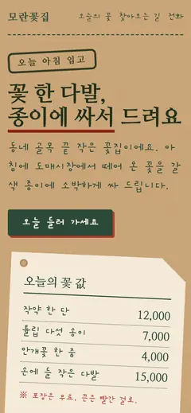
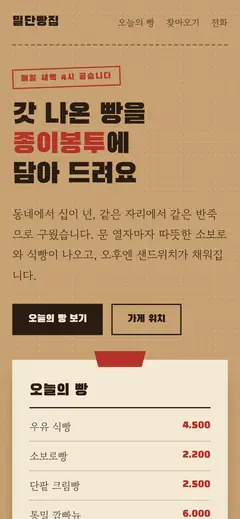
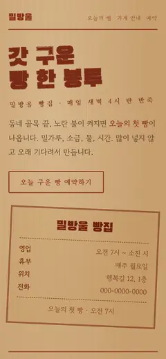
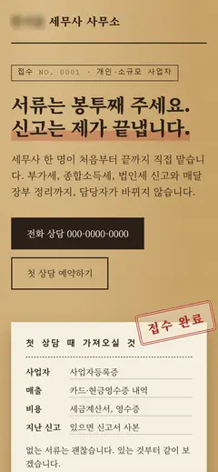
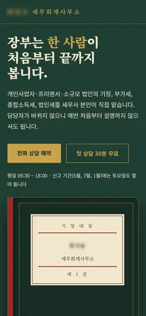
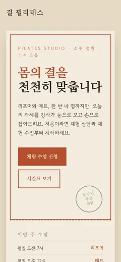
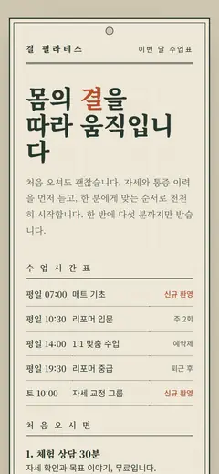
틀은 달라졌는데, 이번엔 누런 종이 느낌으로 몰렸어요.
3단계
끝에 붙인 말「단, 종이·크라프트 느낌은 빼고.」
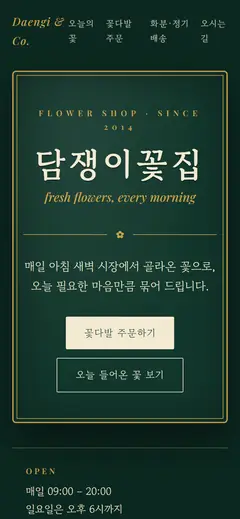
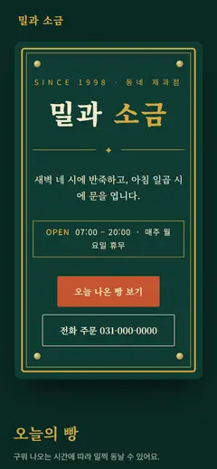
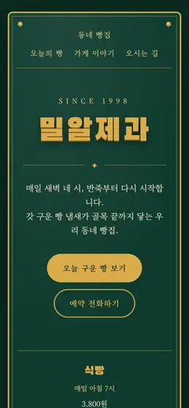
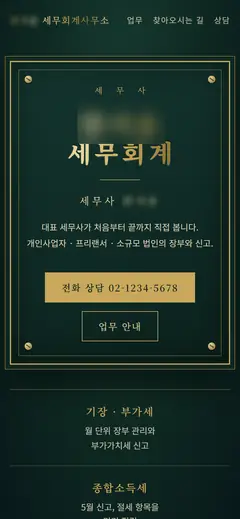
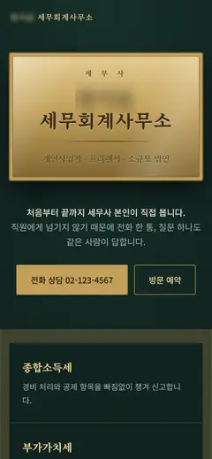
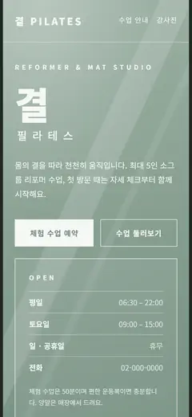
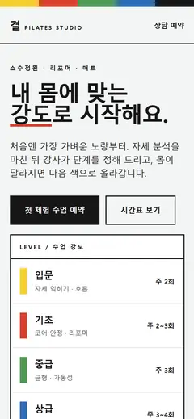
하나를 막으니 다른 한쪽으로 옮겨 갔어요.
4단계
끝에 붙인 말「우리 가게 ○○의 색과 글씨로 화면을 만들어 줘.」
일곱 번 다 준 물건을 따랐고, 초록 · 금색으로 몰린 판은 하나도 없었어요.
「우리 가게 ○○」의 ○○ 자리에 넣을 물건이에요. 이 세 가지만 보면 돼요.
지어내지 말고 가게에 있는 물건에서 골라요. 차양, 바구니, 간판, 매트처럼요.
「파란 줄무늬」, 「분홍 네온」처럼 색을 말로 적을 수 있는 물건이요. 일곱 번 다 색을 같이 적었어요.
여럿을 늘어놓지 않고 물건 하나만 적어요. 일곱 번 다 하나씩만 줬어요.
업종과 물건을 적으면 요청문이 완성돼요. 복사해서 채팅 AI 새 대화에 붙여 넣으세요.